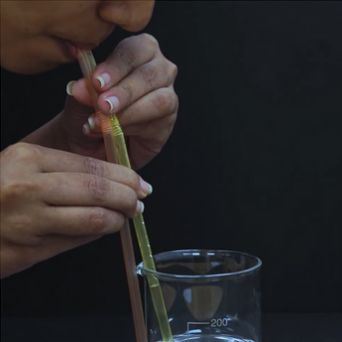
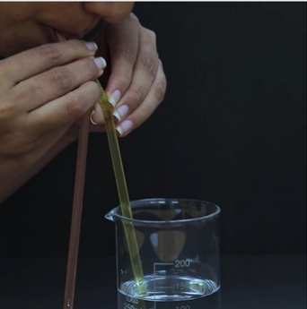

Two thin glass slides, water
Insert one straw into a glass filled with water.
Place the second straw parallel to the first but outside the glass.
Now you can demonstrate. Place your tongue on the straw that is outside the glass, and you will be able to drink the water.
Now ask your friend to drink water by placing both straws in their mouth. They will not be able to drink the water at all.
The density of water is greater than that of air. Therefore, to bring water up to the mouth, we need to suck with more force. However, since air is lighter, it easily enters the mouth, and we are unable to apply the necessary force to pull the water up. But if we place our tongue on the outer straw, only the straw in the water remains open, and the water rises through it.
Try using two straws — place one in the drink and keep the other outside in the air, then suck from both together. What happens? Observe and think — why doesn’t the drink rise as usual? How does this reveal the role of air pressure in drinking through a straw?